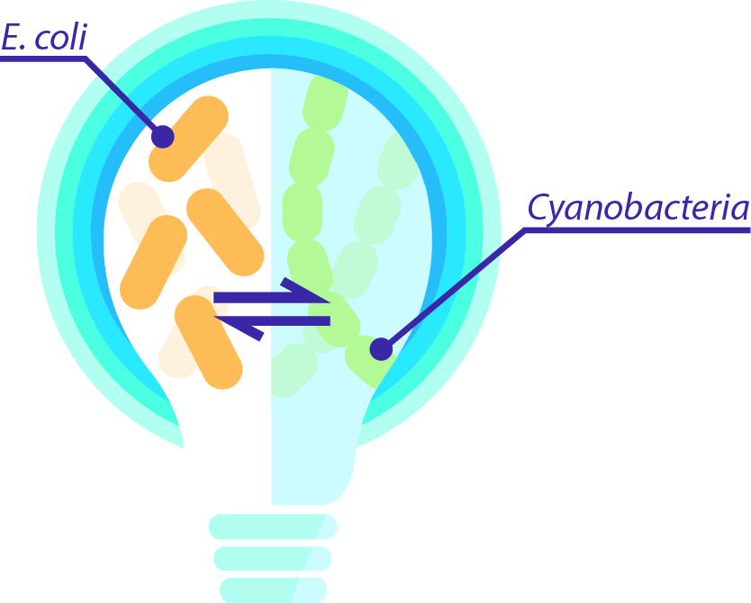
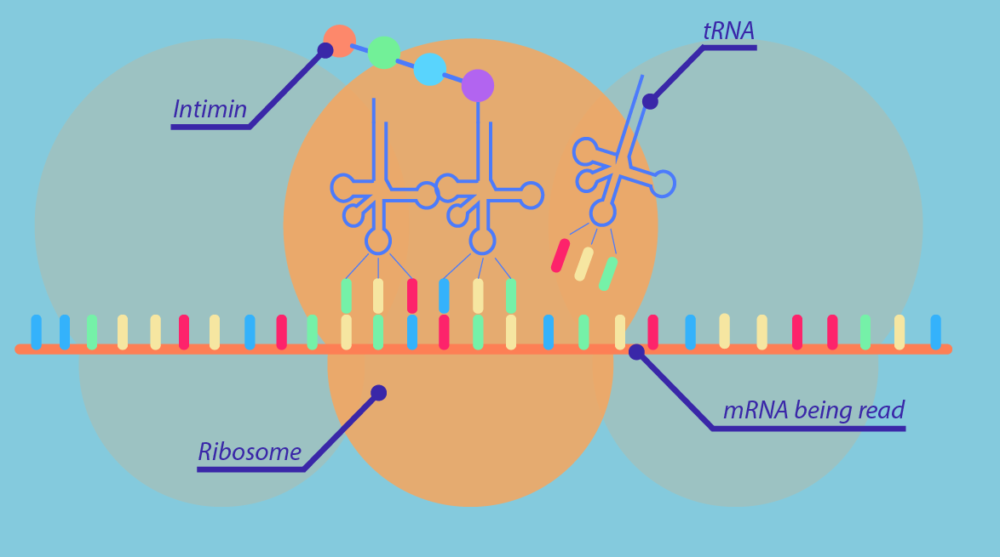

- Determine the concentration of Cyanobacteria cells required in the LIT lightbulb
- Determine the concentration of E.coli cells require in the LIT lightbulb
- Determine the optimal dimesnsions for the LIT lightbulb
- Determine the optimum incoming light intensity required to maximise the production of glucose from the Cyanobacteria
‘OptoFlux: Making designing a breeze’
A mathematical model that optimizes object dimensions to maximize their productivity
The Science behind the LIT lightbulb
OptoFlux is a mathematical model that determines the optimum dimensions for our LIT lightbulb
in order to maximise the luminescence produced from our optogenetic technology.
Our LIT lightbulb is powered by the co-culture of photosynthesising Cyanobacteria cells and luminescing E.coli cells.
In order to maximise the amount of luminescence our E.coli cells can produce we need to maximise the amount of photosynthesis
taking place by the Cyanobacteria cells. Essentially, when the Cyanobacteria cells respire they produce glucose which is
then taken up by the E.coli cells to produce luminescence. OptoFlux ensures that photosynthesis is occurring at the same rate
in all the cells regardless of their position in the lightbulb. In order to ensure this the same light intensity will reach all the cells
a optimal diameter, which would minimise shading effects, would need to be used for our LIT lightbulb. The dimensions
we achieved from OptoFlux enabled us to create a 3D model of our LIT lightbulb in AutoCAD.
Schematic of the co-culture in the LIT lightbulb:

In order to to model the luminescence produced from our LIT lightbulb we considered two aspects:
firstly the amount glucose produced from the Cyanobacteria cells for the E.coli cells; and secondly the number of
E.coli cells we require in order to produce a high enough luminescence to compete with a conventional 160W lightbulb.
We started off by developing our OptoFlux model in order to maximize the amount of glucose produced from our Cyanobacteria
cells. We then calculated the number of E.coli cells that would be required to produce a high enough
luminescence to compete with a 160W lightbulb. We concluded by evaluating whether the maximum amount of
glucose that could be produced from the Cyanobacteria would be enough to culture the required number
of E.coli cells.
Breakdown of the steps involved in the OptoFlux model:
- 1. Incoming Photon Flux Density (Iph) at the edge of the lightbulb that is closest to the light source
- 2. Iph at each position in the lightbulb
- 3. Rate of photon uptake by the cells at each position in the lightbulb
- 4. Average sugar production rate at each position in the lightbulb
Model Aims
Modelling steps
1.) Incoming Photon Flux Density (Iph) at the edge of the lightbulb closest to the light source
We determined the number of photons entering our LIT lightbulb by employing the Planck-Einstein relationship, this
enabled us to use radiometric units to quantify the number of photons entering our LIT bulb. We only focused on quantifying the Iph within the Phostosynthetically
Active Radiation (PAR) part of the light spectrum, as those are the only light wavelengths used for photosynthesis.
Through quantifying the number of photons entering our LIT lightbulb we had the ability to determine the levels of photosynthesis
that could take place by our Cyanobacteria cells.

Legend:
Iphλ = The Incoming photon flux density at a particular wavelength (λ) of light
Iph = The total Incoming photon flux density over the PAR light spectrum
Enl = The amount of light absorbed by the Cyanobacteria cells at different Iph values
2.) Iph at each position in the lightbulb
We then decided to divide the lightbulb into a number of imaginary segments (z),
we determined the Iph for each imaginary segment of our LIT lightbulb. This would enable us to evaluate the number of photons
available for the photosynthesis of our Cyanobacteria cells at each position within the lightbulb.

Legend:
αx,λ = Specific light absorption coefficient for Cyanobacteria cells
Cx = Cyanobacteria biomass concentration in the LIT lightbulb
z = Location in the lightbulb
AF= Accumulation Factor (accounts for the photoaccumulation state of the cells)
Δλ= Wavelength intervals
3.) Rate of photon uptake by the cells at each position in the lightbulb
In order to determine the photon uptake rate at each position in the LIT lightbub, we decided to use forward and backward finite differences to solve our differential equation describing the photon uptake rate. The finite differences allowed us to estimate an approximation of the Iph at each position in the LIT lightbulb.

Legend:
Δz = Distance between two positions in the LIT lightbulb
qph(z) = Rate of photon uptake by the Cyanobacteria cells at each position in the LIT lightbulb
4.) Average sugar production rate at each position in the lightbulb

In order to determine the average sugar production rate within the LIT lightbulb we needed to determine
the specific sugar production rate and the yield of biomass on sugar at each position in the LIT lightbulb.
Our first step was to determine the specific sugar production rate at each position of the LIT lightbulb:
Legend:
qsc(z)= Specific sugar production rate at each position in the LIT lightbulb
qs,mc(z) = Maximal sugar production rate in the cells
Yphmc = Maximal yield of sugar on photons

Legend:
Ysph(z)= Yield of biomass on sugar at every position in the LIT lightbulb

Legend:
qs averagec= Average sugar production rate
OptoFlux Results
Using our OptoFlux model, we determined the optimal dimensions, Cyanobacteria concentraiton and Incoming Photon Flux Density required to maximize the sugar production from our Cyanobacteria cells.
Optimising the diameter of the LIT lightbulb
In order to determine the optimum diameter for the LIT lightbulb we decided to focus on two aspects,
the amount of sugar produced and the yield of sugar on biomass for each diameter tested.

Figure 1: Demonstrates the change in the average sugar production rate and the
yield of biomass on sugar as the diameter of the LIT lightbulb increases
From Figure 1 we determined that as the diameter of the LIT lightbulb increases the rate of the average sugar production
decreases. This is something we anticipated, as when you increase the diameter of the lightbulb you are also increasing the area in which the Cyanobacteria may
position themselves. Therefore, due to the uncertainty associated with the distribution of the cells in the diameter
there may be additional shading effects. This would result in less light being able to penetrate the lightbulb and reach all the cells. The yield of
biomass on sugar remains the same as the diameter of the lightbulb increases, as the concentration of the cells present in the lightbulb does not change.
| Parameters | Optimised values |
|---|---|
| Average sugar production rate (qs average) (molsmolx-1s-1) | 9 |
| Yield of biomass on sugar (Ys/ph) (molsmolph-1) | 0.1 |
| LIT lighbulb Diameter (m) | 0.098 |
Figure 3: Outlines the optimised diameter for the LIT lightbulb and the corresponding
average sugar production rate
Optimising the concentration of the Cyanobacteria cells in the LIT lightbulb
In order to determine the optimum Cyanobacteria cell concentration for the LIT lightbulb we decided to focus on two aspects, the amount of sugar produced and the yield of sugar on biomass for each diameter tested.

Figure 4: Demonstrates the change in the average sugar production rate and the yield of biomass on sugar as the concentration of the Cyanobacteria inside the LIT lightbulb increases
From Figure 4 it is evident that as the concentration of Cyanobacteria in the LIT lightbulb increases the average rate of sugar production decreases. If the concentration of cells in the lightbulb increases, the number of cells found in the lightbulb increases. This causes the the viscosity of the cell culture in the lightbulb to increase. Therefore, it becomes harder for light to penetrate the cell culture and reach cells that are found further inside the lightbulb. As such, the average sugar production rate in the LIT lightbulb decreases.
| Parameters | Optimised values |
|---|---|
| Average sugar production rate (qs average) (molsmolx-1s-1) | 1.2 |
| Yield of biomass on sugar (Ys/ph) (molsmolph-1) | 0.1 |
| Concentration of Cyanobacteria cells (mol m3) | 0.098 |
Figure 5: Outlines the optimised diameter for the LIT lightbulb and the corresponding average sugar production rate
Optimising the Incoming Photon FLux density (Iph) for the LIT lightbulb
In order to determine the optimum Iph for the LIT lightbulb to operate at. We decided to focus on two aspects, the amount of sugar produced and the yield of sugar on biomass for each diameter tested.

Figure 6: Demonstrates the change in the average sugar production rate and the
yield of biomass on sugar as the Iph for the LIT lightbulb increases
From Figure 6 it is apparent that as the Iph for the LIT lightbulb increases the average sugar production rate increases. This occurs
because by increasing the Iph infiltrating the lightbulb, the number of photons available for photosynthesis are also increasing.
Therefore, there are more photons available for photosynthesis. This also helps overcome any shading effects present in the LIT lightbulb.
Cost Analysis
We ran a Cost Analysis to ensure our LIT optogenetic tool was an affordable technology current labs could use to replace alternative technologies. We focused on identifying the main operational costs a user would incur, where we determined the most critical ones were: the light intensity they used to activate the E.coli cellular mechanism; and the frequency of light pulsing. We took the costs incurred for both methods into consideration, where we attempted to identify the most cost-efficient operational conditions for our tool.
Figure 13: Outlines the operating costs incurred for operating the optogenetic tool with a range of light intensities with no light pulsing present
We also decided to analyze the impact light pulsing would have on the overall process costs.

Figure 15: Outlines the operating costs incurred for pulsing the light source of the optogenetic tool over a range of frequencies at a light intensity of 40 W/cm2
We then decided to plot both the costs incurred for different light intensities and the
pulsing durations on the same graph to evaluate their synergistic effect.

Figure 17: Demonstrates a comparison of the effects of light pulsing and light intensity on the overall cost of our optogenetic tool
Figure 17 exhibits that the costs incurred to operate our optogenetic tool increases proportionally to the light intensity and the light pulsing frequency used. We decided to define the optimum operating conditions for our optogenetic tool as those at which both
lines intersect. Beyond the point of intersection, it was evident that the operational costs for the optogenetic
tool were too high. Below the intersection point it was evident that the activity of the E. coli cell adhesion
mechanism would be too slow. As one of the biggest selling points for our technology is its rapidity we decided
it would not be feasible to operate at such a slow rate.
The best cost trade-off was identified when operating our technology
at a light intensity of 30 W/cm2 with a 4.5-hour pulsing frequency.
Alternative applications of our model
Stock market
Similarly, our model could be adapted to characterize the volatile nature of publically listed companies’ share prices in the stock market. One could divide the differential equations into the main factors which affect the share price of a company. These factors could be: the Lombard Rate, which is set by the European Central Bank; the desirability of a company’s shares (set as a function of the market share a company has); and a company’s share price. A decrease in the Lombard rate would result in an increase in the share price of a company, which would lead to an increase in the number of the company’s shares bought from the stock market resulting in an increase of market share the company was gaining in its industrial sector. Through our model financial institutions could identify the time it takes for a change in the Lombard Rate to result in a change in the company’s market share. Simultaneously, once the bottleneck is identified, the company’s management team could optimize parameters (such as advertising or product diversification) to minimize the time taken for this change to occur.
Collaboration
Throughout the summer we had a bilateral collaboration with the iGEM SVCE 2017 team from India. Our collaboration started off with us sending each other useful sources and tutorials on how to approach modelling for cellular mechanisms, as neither team considered itself an expert in the field. Once we both started forming the differential equations for our respective models, we sent each other documents with a summary of our ODEs and provided feedback to each other. Both teams provided constructive feedback on how to present complex information in a simple manner to make it easy to understand for non-modellers, while at the same time we helped refine each other’s differential equations.
LEGIT Assumptions
- Mass action kinetics
- Michaelis Menten kinetics
- All reactions are taking place in cells that are plated in a petri dish
- Light intensity is the only factor affecting the intimin protein expression in the cells
- Every cell is activated by the same light intensity, regardless of its position in the petri dish
- There is no light reflection or refraction from the cells
- All cells are at their exponential growth phase
- All cells are equally as probable to express SpyTag and SpyCatcher
- SpyTag and SpyCatcher are constitutively expressed with Intimin
LEGIT Species

LEGIT Parameters

LEGIT Initial Conditions

Bibliography
Thereza, C., Marina, I., Luciana.Cambricoli, d. and Olivia, C. (2004). Expression of green fluorescent protein (GFPuv) in Escherichia coli DH5-a, under different growth conditions. African Journal of Biotechnology, 3(1), pp.105-111.
Wlab.ethz.ch. (2017). Cell Surface Protein Atlas. [online] Available at: http://wlab.ethz.ch/cspa/#abstract [Accessed 4 Sep. 2017].
Sciencedirect.com. (2017). Membrane integration of E. coli model membrane proteins - ScienceDirect. [online] Available at: http://www.sciencedirect.com/science/article/pii/S0167488904000813 [Accessed 4 Sep. 2017].
Arun KH e. Green fluorescent proteins in receptor: an emerging tool for drug discovery. – PubMed –NCBI [Internet]. Ncbi.nlm.gov.2017 [cited 21 August 2017]. Available from: https://www.ncbi.nlm.nih.gov/pubmed/15596111
[internet] UVGermicidalTechnicalData. [cited 10 September 2017] http://www.pveducation.org/pvcdrom/effect-of-light-intensity (accessed 10 September 2017).
Jayaraman, P., Devarajan, K., Chua, T. K., Zhang, H., Gunawan, E. and Loo Poh, C. Blue light-mediated transcriptional activation and repression of gene expression in bacteria. NCBI. 2016;44(14):6994–7005.
Philips, Ron. "Cell Biology By The Numbers." Book.bionumbers.org. N.p., 2017. Web. 10 Sept. 2017.
Kiparissides, Alexandros et al. "Modelling The Delta1/Notch1 Pathway: In Search Of The Mediator(S) Of Neural Stem Cell Differentiation." PLoS ONE 6.2 (2011): e14668. Web.